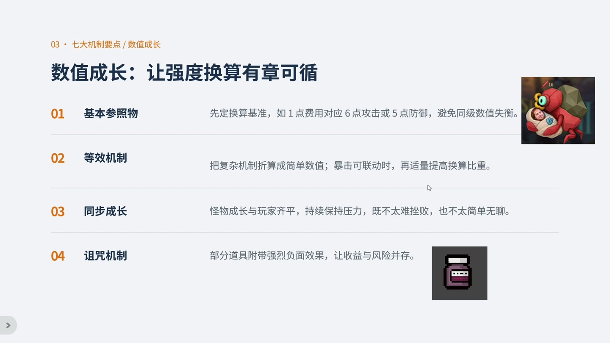

数值成长：让强度换算有章可循
肉鸽的数值设计有一个前提：玩家在变强，怪物也在变强。这不是为了“让游戏更难”，而是为了让成长可感知——如果怪物不变，你玩到第三层就已经无敌，后面全是走路。反过来，如果怪物涨得比玩家快，玩家会觉得自己所有努力都被吃掉。
这一章讲四个工具：费用参照物、等效折算、同步成长曲线、诅咒定价。它们合起来，能把“这个道具强不强”从拍脑袋变成可计算的问题。
6.1 参照物：先定一条基准线
《杀戮尖塔》的做法值得直接借鉴：游戏里每回合有 3 点能量，最基础的攻击牌「打击」是 1 费 6 伤害，最基础的防御牌「防御」是 1 费 5 格挡。于是整款游戏获得了一条基准：
费用基准
1 点费用 ≈ 6 点伤害，或 5 点格挡。
所有新卡都围绕这条线设计：想要更强的效果，就在这个基准上加减。比如把「防御」从 5 格挡提升到 8 格挡，还附带一张抽牌，那它一定在别处付了代价（更高的费用、更稀有的品质、或某个负面效果）。这条基准的作用不是让所有卡一样强，而是让“这张卡为什么值这个价”有据可依。
基准线不是不能突破。稀有的强力牌本来就该超模，否则玩家没有追求。关键是超模要有兑换物：稀有度、高费用、构筑限制、或明确的负面效果。视频里举的例子很典型——某张 3 费打 32 伤害的重击牌，按 6 伤/费算应该只有 18，它超了将近一倍，但它是稀有牌，且需要你为它留出整回合的能量。
| 卡牌类型 | 每点费用的效果预期 | 常见补偿方式 |
|---|---|---|
| 普通攻击 | 6 伤害左右 | 无 |
| 普通防御 | 5 格挡左右 | 无 |
| 带特效的普通牌 | 略低于基准（4–5 伤害 + 抽牌/易伤） | 效果占用了数值预算 |
| 稀有强力牌 | 基准的 1.5–2 倍 | 稀有度、高费、构筑门槛 |
| 带负面效果的牌 | 基准的 1.5 倍以上 | 自伤、弃牌、消耗、施加诅咒 |

6.2 等效机制：把复杂效果折算成简单数值
暴击是最典型的例子。一把剑写“攻击 5，暴击率 50%，暴击造成 2 倍伤害”，玩家看到的是一堆数字，策划要做的是把它折算成一个可以横向比较的等效攻击力。
用期望值：
等效攻击力
E = 基础伤害 × [1 + 暴击率 × (暴击倍率 − 1)]
代入：5 × [1 + 0.5 × (2 − 1)] = 7.5。这把剑在长期输出上，等价于一把攻击 7.5 的普通剑。
如果是 3 倍暴击，同样的 50% 暴击率：5 × [1 + 0.5 × 2] = 10。
| 暴击率 | 暴击倍率 | 等效系数 | 基础 5 时的等效攻击 |
|---|---|---|---|
| 0% | × | 1.00 | 5.0 |
| 25% | 2 倍 | 1.25 | 6.25 |
| 50% | 2 倍 | 1.50 | 7.5 |
| 75% | 2 倍 | 1.75 | 8.75 |
| 50% | 3 倍 | 2.00 | 10.0 |
| 100% | 2 倍 | 2.00 | 10.0 |
为什么成长性要额外加权
同一把剑，如果它的暴击率能随着后续道具成长（比如从 50% 涨到 90%），它的价值就高于 7.5。因为你买的不是一个静态的 7.5，而是一个会跟着构筑放大的乘数。
视频里的说法是：这种情况下可以把它等效成 8 点甚至 9 点攻击的剑，而不是老老实实的 7.5。这个判断的数学依据是：暴击率与暴伤属于乘法维度，它们会和后续的增伤、攻速相乘，所以前期给一点，后期会被放大若干倍。
6.3 同步成长：让压力保持在同一水平
玩家成长与怪物成长必须一起设计，否则会出现两种典型崩坏：
- 玩家涨得快：第三层开始一路平推，游戏失去挑战，剩下的时间都在走流程。
- 怪物涨得快：玩家的构筑还没成型就被压死，感觉所有努力都被系统吞掉。
可用的度量是 TTK（Time To Kill，击杀耗时）：打掉一个标准敌人需要几秒。这个数字在整局里应该保持在一个窄区间内小幅波动，而不是一路上升或下降。视频里讲者用了一个很形象的说法：让玩家始终“有点压力，但不至于被一脚踹死”。
| 阶段 | 玩家 DPS 增长 | 敌人 HP 增长 | TTK 走势 | 体验 |
|---|---|---|---|---|
| 前 1/3 | 快（每层 +20%） | 慢（每层 +15%） | 下降 | 爽感建立，让玩家尝到变强的甜头 |
| 中 1/3 | 中（每层 +12%） | 中（每层 +12%） | 平稳 | 构筑开始成型，压力回归 |
| 后 1/3 | 慢（每层 +8%） | 快（每层 +18%） | 上升 | 终局紧张，需要靠构筑质变突破 |
这张表描述的是“节奏”，不是绝对数值。它的关键信息是：成长曲线不该是一条直线。前期给甜头、中期给稳定、后期给压力，这是绝大多数成功肉鸽的共同形状。
6.4 诅咒机制：给收益标价
诅咒是肉鸽里最有效的“风险定价”工具。它让玩家可以用未来的不确定性，换当下的强度。视频里举了两个经典形态：
- 道具自带负面效果：某件高伤害道具会炸伤自己，收益与风险绑在同一件东西上。
- 机制层面的代价：《以撒》的恶魔房要用血上限换道具——你变强了，但更脆了。
设计诅咒有三条原则：
负面必须可规避或可转化
“受到伤害翻倍”这种纯惩罚，玩家只能忍受；而“攻击附带自伤，但你有回血构筑就能抵消”这种，玩家可以主动围绕它做构筑。后者才是好设计。
代价要能算清楚
玩家要能估算“我拿这个，大概会损失多少”。如果代价是随机的（比如“每次攻击有概率自爆”），玩家无法定价，只能凭感觉，最后要么全拿要么全不拿。
别让诅咒成为唯一解
如果诅咒道具的收益明显高于普通道具，所有高手都会拿，那它就不是风险选择，而是必修课。收益差控制在 20%–40%，让保守派也有活路。
6.5 实现：等效 DPS 与曲线验收
using System;
[Serializable]
public class CombatStats
{
public float BaseDamage = 5f;
public float AttackSpeed = 1f; // 每秒攻击次数
public float CritRate = 0.5f; // 0–1
public float CritMultiplier = 2f; // 暴击倍率
public float DamageBonus = 0f; // 全局增伤，0.1 = +10%
}
public static class StatMath
{
/// <summary>暴击的期望乘数</summary>
public static float CritExpectation(float rate, float mult)
=> 1f + rate * (mult - 1f);
/// <summary>等效 DPS：所有维度相乘，方便横向比较道具</summary>
public static float EffectiveDps(CombatStats s)
{
return s.BaseDamage
* s.AttackSpeed
* CritExpectation(s.CritRate, s.CritMultiplier)
* (1f + s.DamageBonus);
}
/// <summary>等效攻击力：把暴击折回单次伤害口径</summary>
public static float EquivalentDamage(float baseDamage, float rate, float mult)
=> baseDamage * CritExpectation(rate, mult);
}
把“等效”这件事写进代码，好处是任何一件新道具都能立刻算出它对 DPS 的贡献。下面的验收器用来检查成长曲线是否跑偏：
using UnityEngine;
public class CurveValidator : MonoBehaviour
{
[Header("曲线参数")]
public float playerDpsGrowthPerFloor = 0.15f; // 玩家每层 DPS 增长
public float enemyHpGrowthPerFloor = 0.15f; // 敌人每层 HP 增长
public int floors = 10;
void Start()
{
float dps = 20f, hp = 60f;
for (int f = 1; f <= floors; f++)
{
float ttk = hp / dps;
Debug.Log($"第 {f,2} 层：DPS {dps:F0} / HP {hp:F0} / TTK {ttk:F2}s");
dps *= 1f + playerDpsGrowthPerFloor;
hp *= 1f + enemyHpGrowthPerFloor;
}
}
}
playerDpsGrowthPerFloor 这类参数要从真实数据里取：先跑一遍玩家前 10 层的实际 DPS，再反推增长率，不要用拍出来的数。
6.6 三个坑
只堆一个维度
所有道具都是“攻击 +5”，玩家的操作与构筑都退化成买数值。正确做法是把攻击拆成伤害、攻速、暴击、范围等维度，让不同道具落在不同维度上，这样才有多条构筑路线。
用血量堆难度
把敌人 HP 乘以 5 来制造难度，结果只是让战斗变长，玩家并不觉得更挑战。难度应该来自机制（新的攻击模式、更短的预警、更复杂的场地），血量只负责把战斗拉到一个合适的时长。
数值爆炸
乘法维度一多，后期伤害会指数级增长，最后一击秒 Boss 或者被 Boss 秒。给每个维度设上限、给总伤害设软顶、或者引入减伤/护盾这类非线性机制，都是常用解法。
实现练习 6-1
给三件你项目里的道具算等效 DPS，其中至少一件带暴击、一件带攻速。算完之后回答：它们的等效值差多少倍？如果差超过 3 倍，检查是否缺少“费用/稀有度”的补偿。
实现练习 6-2
用 CurveValidator 跑三条曲线：玩家增长 1.15 / 怪物 1.15、1.25 / 1.15、1.08 / 1.20。观察 TTK 的走势，判断哪一条最接近“前期爽、中期稳、后期紧”。
判断练习 6-3
设计一个诅咒道具：它必须足够诱人，又必须让玩家在拿之前犹豫三秒。写出它的正面效果、负面效果，以及玩家可以用来抵消负面效果的两条构筑路径。
本章小结
- 先定费用基准（1 费 ≈ 6 伤 / 5 防），所有卡牌围绕它加减，超模要有补偿。
- 用期望值把暴击类机制折算成等效攻击，带成长性的维度额外加溢价。
- 同步成长用 TTK 度量，节奏应是“前期下降、中期平稳、后期上升”。
- 诅咒机制是风险定价工具，负面必须可规避或可转化为构筑的一部分。
- 难度不要靠堆血量，靠机制变化。